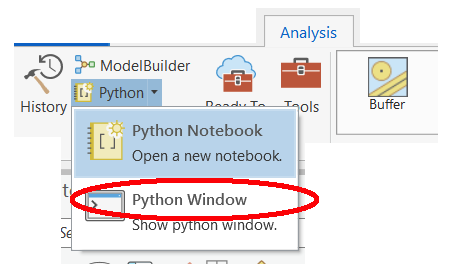

=======
2.4. Python Window in ArcGIS Pro
In ArcGIS Pro, select the Analysis tab. Depending on your version of ArcGIS Pro, you will be able to select the Python Window. As shown below, in Python 2.7, you can click the drop-down menu to the right of the Python button and click Python Window. In other versions, or you may just have to click on the Python Window.

>>>>>>> 9e9fd24 (New commit):build/html/getting_started.html
This opens the Python window.

<<<<<<< HEAD:docs/build/html/getting_started.html
The top section of the Python Window is called the transcript. The bottom section is called the prompt. The transcript is initially blank. The transcript provides a record of previously entered code and its results.
The prompt is where you type your code. When the Python window first opens, the message in the prompt reads Initializing Python interpreter, which means the window is getting ready to receive your code. After a few seconds the message is replaced with Enter Python code here, which means you can start typing your code. See this link for a tutorial.
=======
The top section of the Python Window is called the transcript, and the bottom section is called the prompt. The transcript is initially blank. The transcript provides a record of previously entered code and its results.
4. The prompt is where you type your code. When the Python window first opens, the message in the prompt reads Initializing Python interpreter, which means the window is getting ready to receive your code. After a few seconds the message is replaced with Enter Python code here, which means you can start typing your code. After you have opened the Python window for the first time, these messages don’t appear again in the current session.
See this link for a tutorial.
>>>>>>> 9e9fd24 (New commit):build/html/getting_started.html
<<<<<<< HEAD:docs/build/html/getting_started.html
1.6. ArcGIS API for Python
=======
2.5. ArcGIS API for Python
>>>>>>> 9e9fd24 (New commit):build/html/getting_started.html
The ArcGIS API for Python is distributed as a conda package named arcgis. It can be run from within Anaconda and other Python Distributions. See this hyperlink for more information.
<<<<<<< HEAD:docs/build/html/getting_started.html
1.7. The Python Console within QGIS
Running Python from the Console Shell
Open QGIS. From the main menu in QGIS, select Plugins | Python Console. This will cause the Python Console to appear. It may open up towards the bottom of the application, however, if you wish, you can detach it from the main window and place it whereever you wish.
The lower part of the Console display with the >>> prompt. This is is where you type commands.
The Python statements can be pure Python commands that have nothing to do with QGIS, or they can be Python statements ained at manipulating QGIS cser data i QGIS.
=======
2.6. The Python Console within QGIS
Running Python from the Console Shell
Open QGIS and add this WFS layer. To do so, click on Add Layer | Add WFS Layer…, then select New and provide this URL: https://maps.gns.cri.nz/geology/wfs
Highlight the layer called NZL_GNS_250K_faults and select Add Layer to Project.

From the main menu in QGIS, select Plugins | Python Console. This will cause the Python Console to appear. It may open up towards the bottom of the application, however, if you wish, you can detach it from the main window and place it whereever you wish.
The lower part of the Console display with the >>> prompt. This is is where you type commands.
The Python commands can be pure Python commands that have nothing to do with GIS or QGIS, or they can be Python commands ained at manipulating QGIS commands or user data.
The iface class is used to access most graphical QGIS components. For example, to get a reference to the active layer, we can write:
>>> layer = iface.activeLayer()
Once you get a reference to the active layer object, you can access methods and properties associated with this object. For example, to get the name of the active layer, we write:
You should get the response in the upper half of the console
Now, let us get a count of the number of features in the layer:
>>>>>>> 9e9fd24 (New commit):build/html/getting_started.html
Accessing the QGIS Python Editor
<<<<<<< HEAD:docs/build/html/getting_started.html
The editor is used to write scripts that are too lengthy to be edited and executed from the Console Shell. It can be accessed by clicking “Show Editor” in the upper part of the console.
To illustrate the use of the editor, we will execute a simple script to print the mean of a set of numbers. The script is provided below along with an illustration of how it appers in QGIS.
1import numpy
2arr_mean = numpy.mean([31,35,46,59,71,80,84,82,75,62,48,36])
3print("The arithmetic mean is :", arr_mean)
 =======
=======
The editor is used to write scripts that would be too lengthy to run from the Console Shell. It can be accessed by right-clicking Show Editor in the upper part of the console.
We will write a simple script to print the names of the fields in the attribute table of the WFC layer
layer = iface.activeLayer()
for fld in layer.fields():
print(fld.name())

The script below get the length of each fault segment and maintains keeps a running total of the lengths
layer = iface.activeLayer()
lengths = []
for fault in layer.getFeatures():
lengths.append(fault.attribute("shape_len"))
print(sum(lengths))
>>>>>>> 9e9fd24 (New commit):build/html/getting_started.html
<<<<<<< HEAD:docs/build/html/getting_started.html
1.8. Jupyter Notebook with QGIS
It is possible to run Jupyter notebook from within QGIS. First, you must install the pyqgis modules into an environment. After than, you can with QGIS outside of the application itself.
Create a Python GIS environment - https://lerryws.xyz/posts/Install-Jupyter-Notebook-in-QGIS3
2.7. Jupyter Notebook with QGIS
It is possible to run Jupyter notebook from within QGIS. First, you must install the pyqgis modules into an environment. After than, you can with QGIS outside of the application itself.
Create a Python GIS environment - https://autogis-site.readthedocs.io/en/latest/course-info/create-python-gis-environment.html